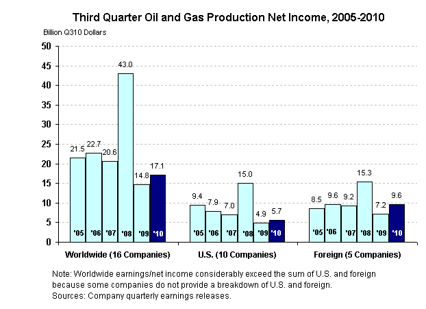
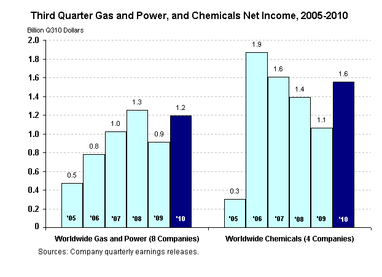

- Crude oil prices in Q310 were 9 percent higher than in Q309, but 5 percent lower than the $77.18 per barrel average for the third quarter of 2005-2009 (in Q310 dollars).
| Third Quarter 2010 Key Findings | |||
|---|---|---|---|
| Net Income: | $17.4 billion | Revenues: | $285.0 billion |
|
|||
Corporate and Petroleum Net Income: (back to top)
- Twenty major energy producers reported a 32-percent increase in net income relative to Q309. However, net income during Q310 represents a 41-percent decrease relative to the third-quarter average for 2005-2009 of $29.5 billion.
- Overall, the petroleum line of business (which includes both oil and natural gas production and petroleum refining/marketing) in Q310 saw a similar net income increase of 28 percent from the level of Q309, increasing almost $4.4 billion.
- A $2.3-billion (16 percent) increase in worldwide oil and natural gas production net income augmented a $2.0-billion increase in worldwide refining/marketing net income, which was $0.8 billion in Q309.
- All lines of business (i.e., U.S. and foreign oil and gas production, U.S. and foreign refining/marketing, worldwide gas and power, and worldwide chemical operations) generated higher earnings in Q310 than in Q309.
Note: corporate net income and the total net income of the lines of business differ because (1) some items in corporate net income are nontraceable, such as interest expense, and are not allocated to lines of business, and (2) the number of companies reporting line-of-business net income varies.
Worldwide Oil and Gas Production Operations: (back to top)
- Worldwide oil and gas production income increased 16 percent ($2.3 billion) relative to Q309, as a small increase in U.S. income was magnified by a larger increase in returns from foreign operations. However, relative to the third-quarter average for 2005-2009 of $24.5 billion, Q310 was 30 percent lower.
- U.S. oil and gas production operations generated 15 percent more income than a year earlier, but 36 percent less than the average for the third quarter of 2005-2009 of $8.8 billion.
- Seven of the 10 included companies reported higher earnings than a year ago, noting in their press releases that this resulted from the effects of higher prices received and, in some cases of higher production levels (e.g., bringing new fields on-line), and lower exploration costs. Companies reporting lower earnings cited reduced production because of asset sales.
- Income from foreign oil and gas production increased 34 percent compared with Q309, but was 3 percent lower than the third-quarter average for 2005-2009 of $9.9 billion.
- Four of the five included companies issuing foreign production financial results reported higher earnings than a year ago. According to company press releases, higher received prices and production levels (partly because new fields were brought on-line) were somewhat offset by currency effects and natural field declines. Lower earnings for the fifth company were attributed to tax effects, despite higher prices and production levels, according to the press release.
Worldwide Refining/Marketing Operations: (back to top)

- Net income from worldwide refining/marketing operations more than tripled, increasing from $0.8 billion in Q309 to $2.9 billion. U.S. returns increased by $1.3 billion while foreign operations increased by $0.6 billion. However, relative to the third-quarter average of $7.2 billion over 2005-2009, earnings from worldwide refining/marketing operations were 60 percent lower.
- U.S. refining/marketing operations generated earnings of $1.5 billion, compared with $0.2 billion in Q309, but earnings still were 69 percent less than the average for the third quarter of 2005-2009 of $4.9 billion.
- Nine of the 12 included companies reported higher net income than a year ago and two of those reporting lower earnings also reported losses. Higher refining margins, throughput, product sales, and crude oil differentials were cited in press releases of companies reporting higher earnings. Trading losses overwhelmed higher marketing margins, according to companies reporting lower earnings.
- Net income from foreign refining/marketing increased 94 percent compared with Q309, reaching $1.2 billion, but was 45 percent lower than the $2.3 billion third-quarter average for 2005-2009.
- Four of the five included companies reported higher earnings than a year ago despite lower throughput. The lower throughput primarily was because output at the Wilhelmshaven, Germany, refinery was reduced for economic reasons. The four companies’ higher earnings were attributed in company press releases to higher product margins and higher utilization rates that were somewhat offset by currency effects. The lower earnings for the fifth company, whose operations are much more narrowly focused than its peers, were attributed in the company press release to reduced refining margins.
Worldwide Petroleum Capital Expenditures: (back to top)
- Worldwide upstream capital expenditures by these companies increased 59 percent despite 2 years of consistently lower-than-average (relative to the 5-year average for the particular quarter) net income. Relative to the third-quarter average for 2005-2009 of $19.7 billion, capital expenditures for Q310 were 48 percent higher.
- The majors' investment in their U.S. oil and gas production operations increased 67 percent relative to Q309, and was 24 percent higher than the $5.6 billion third-quarter average for the last 5 years (i.e., 2005-2009).
- Capital expenditures in foreign oil and gas production operations increased 45 percent in Q310 compared with Q309. Further, the value for Q310 was 53 percent higher than the third-quarter average for 2005-2009 of $7.5 billion.
- Meanwhile, capital expenditures for refining/marketing decreased 23 percent in Q310 (compared with Q309). This continued a 21-month trend of capital expenditure reductions in reaction to 24 months of exclusively lower-than-average net income (based on the 5-year average for the particular quarter). Compared with the third-quarter average for 2005-2009 of $3.5 billion, capital expenditures in Q310 were 14 percent lower.
Worldwide Downstream Natural Gas and Power, and Chemicals Operations: (back to top)
- Net income from the majors' gas and power operations increased 31 percent relative to Q309 and was 35 percent higher than the of $0.9 billion third-quarter average for 2005-2009.
- Six of the seven companies reporting earnings generated higher earnings. Reasons for higher earnings cited in company press releases include higher NGL sales prices, higher margins, greater pipeline reservation revenue, and increased gathering fees.
- Worldwide chemical operations generated 46 percent higher earnings for the majors in Q310 than in Q309, but earnings only were 25 percent higher than the $1.2 billion third-quarter average for 2005-2009.
- All four of the companies issuing chemical results reported higher earnings. These companies attributed higher earnings to higher margins and higher sales in their press releases.
Supplemental Figures: (back to top)
- U.S. crude and NGL production decreased 3 percent compared with Q309 because the effects of natural field declines and asset divestitures offset the effects of new fields starting operations. However, the level of Q310 was 8 percent higher than the third-quarter average for 2005-2009 of 2.7 million barrels per day.
- Foreign crude oil and NGL production increased 4 percent compared with Q309 largely because of newly operational fields, which offset natural field declines. Similarly, the level of Q310 was higher (6 percent) than the 4.8 million barrels per day third-quarter average for 2005-2009.
- Natural gas prices of Q310 were 28 percent higher than in Q309, but 39 percent lower than the $6.68 per thousand cubic feet third-quarter average for 2005-2009 (measured in Q310 dollars).
- U.S. gas production by the majors increased 3 percent compared with production a year earlier because of increased production from existing fields. Further, it was 13 percent higher than the average for the third quarter of 2005-2009 of 20.2 billion cubic feet per day.
- Foreign gas production by the majors increased 11 percent relative to a year earlier and was 20 percent higher than the third-quarter average for 2005-2009 of 15.7 billion cubic feet per day. This increase overwhelmingly was because of new projects.
- The gross refining margin for Q310 was 13 percent higher relative to Q309, but was 35 percent lower than the $19.16 per barrel third-quarter average for 2005-2009 (in Q310 dollars).
- U.S. refinery throughput was 2 percent higher than in Q309, but was essentially the same (+1 percent) as the average for the third quarter over 2005-2009 (11.0 million barrels per day).
- Foreign refinery throughput decreased 1 percent relative to Q309 and was 8 percent lower than the third-quarter average for 2005-2009, 6.1 million barrels per day, primarily because of planned outages.
Supplemental Tables: (back to top)
To be automatically notified via e-mail of updates to this report and to other Energy Finance products, go to the list-serve sign-up page, enter your e-mail address, select the box beside "Financial and Industry Analysis," and then press "subscribe." You will then be notified within an hour of any updates. | |||||||||||||||||||||||||||||||||||